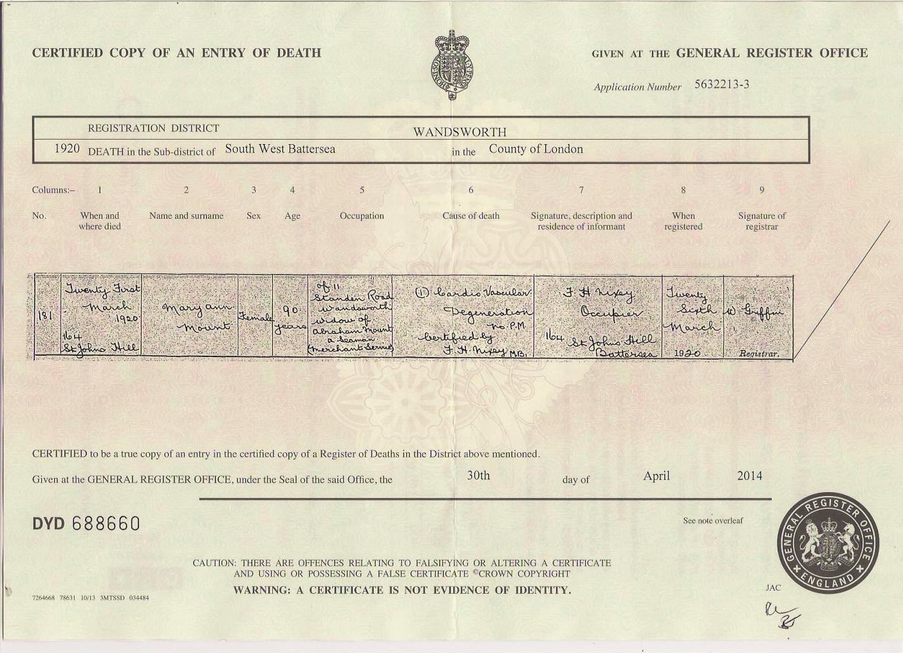
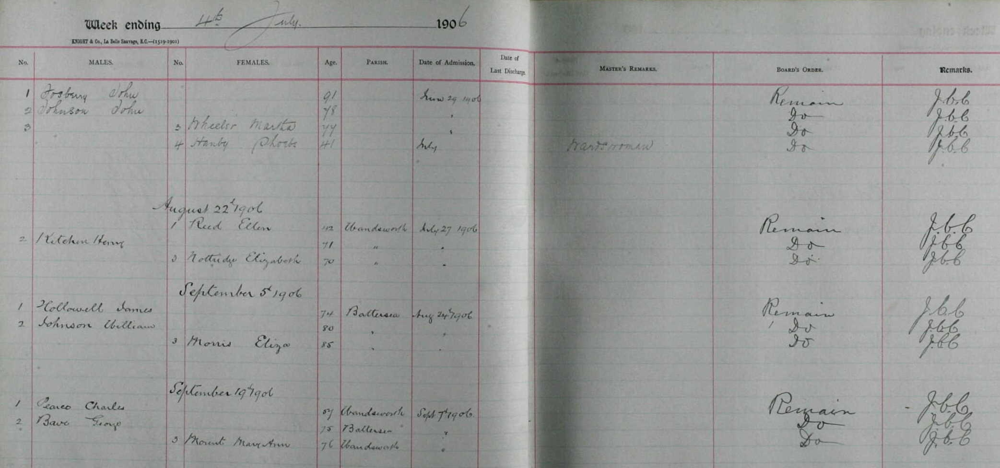
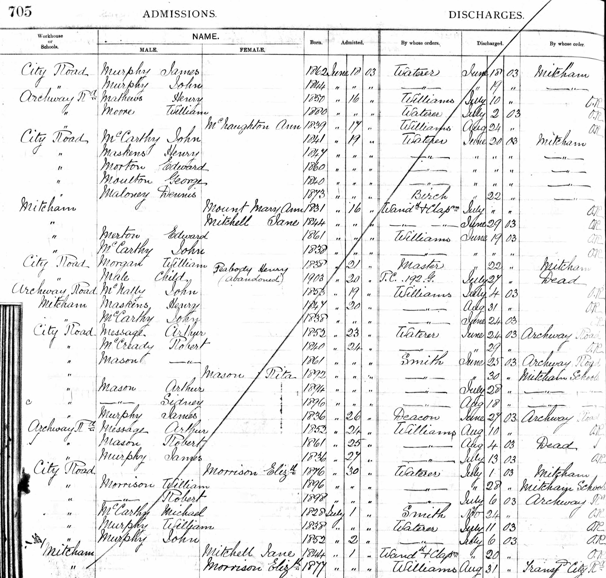
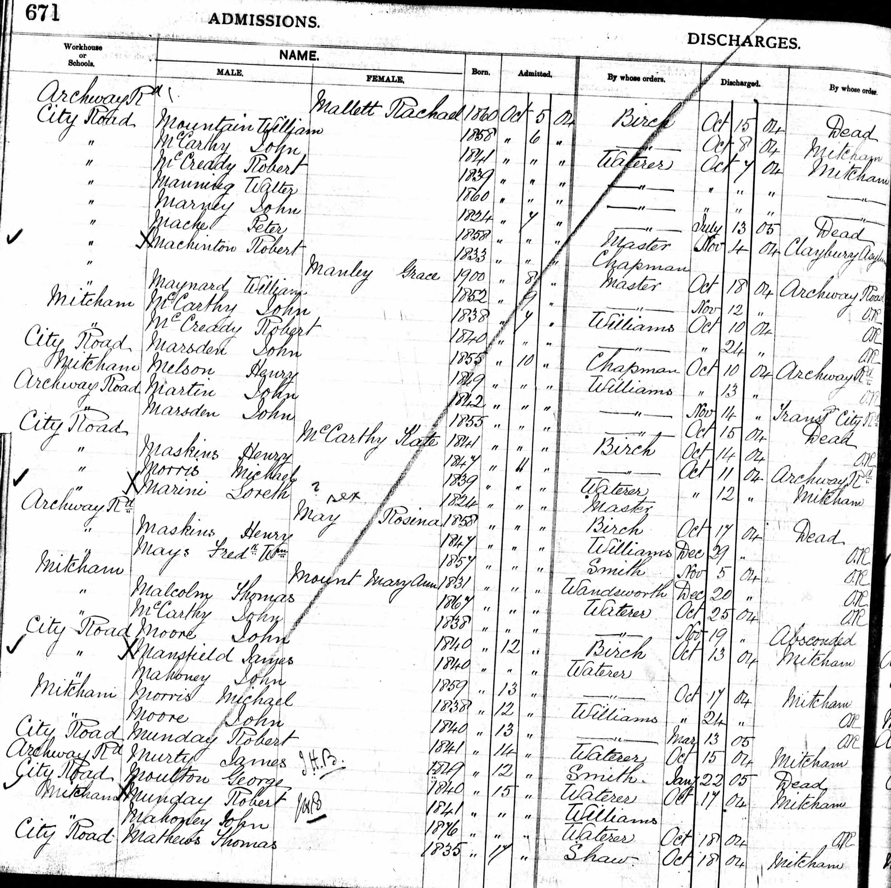
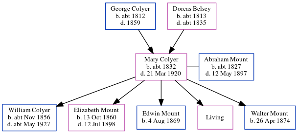

Mary Ann Mount (née Colyer) c1832 - 1920
[ Home ] | [ Calendar ] | [ Surnames Index ] | [ Errors ] | [ Family History ]A charwoman and the child of George Colyer (an agricultural labourer) and Dorcas Belsey, Mary Colyer, the great-great-grandmother of Nigel Horne, was born in Herne, Kent, England c. 18321,2,3,4,5,6, was baptised in Blean, Kent, England on 13 Jul 1833 and married Abraham Mount (a mariner with whom she had 5 children: William, Elizabeth Ann, Edwin Henry, Mary A and Walter Charles, along with 1 surviving child) in Herne Bay, Kent, England on 22 Oct 18598 (Registry office).
During her life, she was living on Salts Lane in Herne Bay on 2 Apr 18719; in Eddington, Kent, England on 3 Apr 188112; at 2 Salts Lane in Herne Bay on 5 Apr 18913; at 372 Merton Road, Wandsworth, London, England on 31 Mar 19014, when she was living with her son William, following the death of her husband on 12 May 1897; in hospital at Mitcham Workhouse, Holborn, London from 16 Jun 1903 to 22 Jul 1903; in hospital from 11 Oct 1904 to 20 Dec 1904; and in hospital on Tooting Bec Asylum, Church Lane, Tooting Common, London on 7 Sept 1906 and on 2 Apr 191110.
She died on 21 Mar 1920 at 164 St. John's Hill, Wandsworth, London, England7 (cardis Vascular degeneration).
Parents
- George was born c. 1812
- Dorcas was born c. 1813
Children
- William was born c. Nov 1856
- Elizabeth Ann was born on 13 Oct 1860
- Edwin Henry was born on 4 Aug 1869
- Walter Charles was born on 26 Apr 1874
Citations
- 1871 England Census Online publication - Provo, UT, USA: The Generations Network, Inc., 2004.Original data - Census Returns of England and Wales, 1871. Kew, Surrey, England: The National Archives of the UK (TNA): Public Record Office (PRO), 1871. Data imaged from the National
- 1881 England Census Online publication - Provo, UT, USA: The Generations Network, Inc., 2004. 1881 British Isles Census Index provided by The Church of Jesus Christ of Latter-day Saints © Copyright 1999 Intellectual Reserve, Inc. All rights reserved. All use is subject to the
- 1891 England Census Online publication - Provo, UT, USA: The Generations Network, Inc., 2005.Original data - Census Returns of England and Wales, 1891. Kew, Surrey, England: The National Archives of the UK (TNA): Public Record Office (PRO), 1891. Data imaged from The National
- 1901 England Census Online publication - Provo, UT, USA: The Generations Network, Inc., 2005.Original data - Census Returns of England and Wales, 1901. Kew, Surrey, England: The National Archives of the UK (TNA): Public Record Office (PRO), 1901. Data imaged from the National
- 1911 England Census Online publication - Provo, UT, USA: Ancestry.com Operations, Inc., 2011.Original data - Census Returns of England and Wales, 1911. Kew, Surrey, England: The National Archives of the UK (TNA), 1911. Data imaged from the National Archives, London, England.
- Public Member Trees Online publication - Provo, UT, USA: The Generations Network, Inc., 2006.Original data - Family trees submitted by Ancestry members.Original data: Family trees submitted by Ancestry members.
- England & Wales, Death Index: 1984-2005 Online publication - Provo, UT, USA: The Generations Network, Inc., 2007.Original data - General Register Office. England and Wales Civil Registration Indexes. London, England: General Register Office. © Crown copyright. Published by permission of the Cont
- England & Wales, FreeBMD Marriage Index: 1837-1915 Online publication - Provo, UT, USA: The Generations Network, Inc., 2006.Original data - General Register Office. England and Wales Civil Registration Indexes. London, England: General Register Office. © Crown copyright. Published by permission of the Cont
- 1871 England, Wales & Scotland Census - Findmypast (was age 40 and the wife of the head of the household)
- 1911 Census for England & Wales - Findmypast (was age 80 and a inmate in the household)
- 1901 England, Wales & Scotland Census - Findmypast (was age 64 and the mother of the head of the household)
- 1881 England, Wales & Scotland Census - Findmypast (was age 45 and the wife of the head of the household)
Media
Abraham Mount - Mary Colyer - marriage certificate

Mary Colyer - death certificate

1871 UK Census

1881 UK Census

1891 UK Census

Mary Ann Mount - workhouse admission

Mitcham Workhouse admissions

1911 UK Census page 2

1911 UK Census page 1

1901 UK Census

Mitcham workhouse admissions 2

England, Births & Baptisms 1538-1975 Transcription - R_884013695
England, Births & Baptisms 1538-1975 Transcription - R_937825980
Canterbury Baptisms Image - GBPRS-CANT-005265403-00594
England & Wales deaths 1837-2007 - BMD/D/1920/1/AZ/000728/086
1871 England, Wales & Scotland Census - GBC/1871/0014201502
1911 Census for England & Wales - GBC/1911/RG14/02369/0038/21
1881 England, Wales & Scotland Census - GBC/1881/0004744074
Family Tree
Map
Generated by ged2site. Last updated on Jul 3, 2024
Known Issues
Residence record for 7 Sep 1906 contains no citation
Residence record for bet 16 Jun 1903 and 22 Jul 1903 contains no citation
Residence record for bet 11 Oct 1904 and 20 Dec 1904 contains no citation